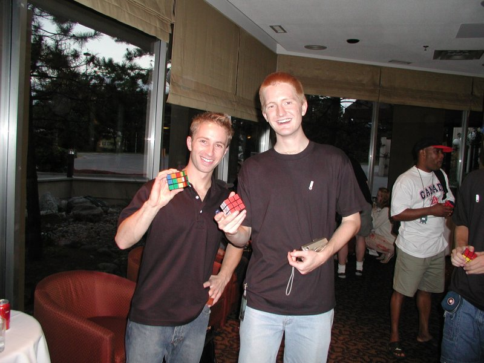
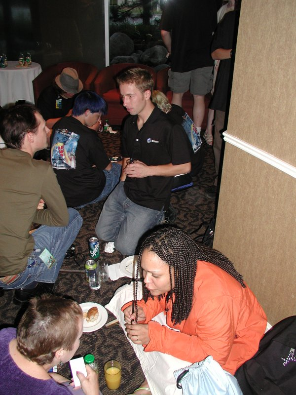

|
Picture Page 3

The two-handed master Dan Knights with the one-handed master Chris Hardwick.

Dan Knights, Jessica Fridrich, and Lars Petrus.
If only I could remember how to solve the damned Dogic ...
Jon Morris with his wife Jean.
Lars Vandenbergh, Peter, and Jaap at the dinner reception.
Mirek Goljan ended up on the 14th place and won his age category (over 40) as well as the Fewest
Moves Challenge.

Collecting signatures for memories.
Lars Petrus and Andy Bellenir. Andy won the speedsolve Pyraminx discipline with the time of 14.09 sec.
Lars Petrus with his wife.
Anders Larsson demonstrating cubing with feet! If remember correctly, the time was little over 12 minutes.
The oldest competitor Rune Wesström.
Peeking over the shoulder at each others' times.
Hands on the pad. NOW! Get ready ...
Dan Knights solving for his title.

Discussions on the floor at the dinner reception on Sunday.
All female competitors.
Hana Bizek fixing the Landry Staircase.
The new world record holder, Jess Bonde, and Jessica Fridrich.
By the end of Sunday, everybody was exhausted and a little sad that it was all behind us ...
Picture Page 1
Picture Page 2
Picture Page 3
|